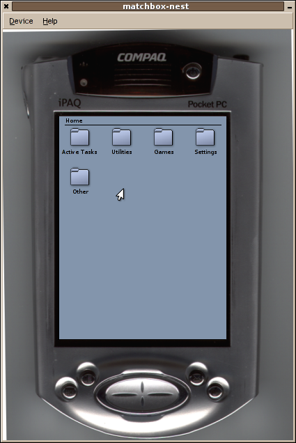

Matchbox Nest is a graphical wrapper around Xnest or Xephyr. It is intended for embedded developers that want to simulate a target device (with an accurate display size, working hardware buttons, etc) on a desktop machine.
The size of the embedded X server, and the image around it, are themable by the user. The default theme is based on a Compaq iPaq, and supports the hardware buttons. Creating new themes is done by writing a single simple XML file.
The embedded X server can either be Xnest (XFree86/X.org) or Xephyr (kdrive). The advantage of using Xephyr is that it supports the newer X extensions such as Render, RandR, Composite, and Damage; allowing you to test applications using these extensions even if your native X server doesn't. Matchbox Nest can also send a signal to Xephyr so that it will highlight the region it is painting, to help debug redraw problems.
Screenshots
This is the default theme, a Compaq iPaq.
Download
Tarballs for download are available at http://projects.o-hand.com/matchbox/sources/matchbox-nest/. Debian packages are prepared and should be in unstable shortly.